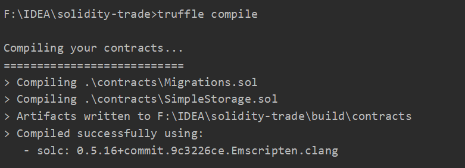
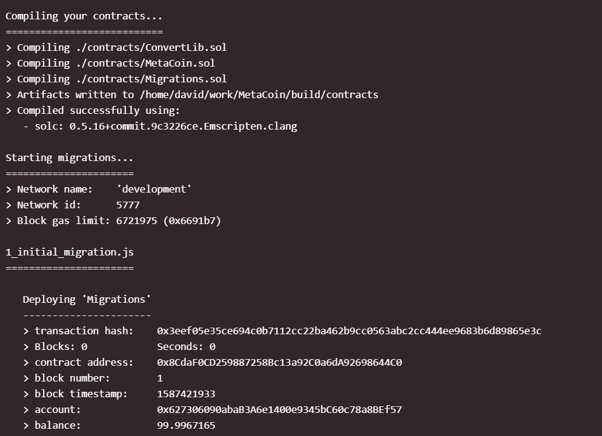

最近要开始学习智能合约的相关知识，需要学习 solidity 语言，所以想建一个 solidity 项目实例来实践一下，同时监控账户信息。但是因为我 Linux 虚拟机里面差的东西太多了，而且好不容易在本机下面配置好的 IDEA，所以毅然决然在 Windows 系统下面配置 solidity！
不过不管是国内教程还是油管都是用 Linux/Mac 进行的配置，没有找到 Win 系统的教程，所以在搭建好环境后准备开个教程写下大致的流程，希望能帮到大家
如果只是单纯的想要熟练语法，写些比较初级的程序，可以直接使用官方提供的 Remix 在线编辑器，按照官方文档进行学习，因为我对观察交易信息及账户余额有特殊需求，且需要使用 MetaMask，所以需要在本地进行环境配置
# 1. 安装依赖
- Nodejs：https://nodejs.org/en/
因为在上一篇博客中有写到怎么安装配置 Nodejs，包括优化速度，所以这里不重复讲解
- truffle
在命令行中输入 npm install -g truffle@5.1.14 进行安装，这里我选定了版本为 5.1.14 主要是为了和油管大神保持相同的版本，不是必须的
安装结果如下，在命令行中输入 truffle version ，若提示找不到 'truffle' 命令，请确认 Nodejs 环境变量是否配置正确
- Ganache
官网链接：https://www.trufflesuite.com/ganache
下载当前操作系统对应版本，Windows 为.appx 文件，双击直接安装即可。安装结果如下
# 2. IDE 环境配置
本人使用的是 IDEA 2020.1，只需要安装 solidity 插件即可。
File->Settings->Plugins 在 Market 中搜索 Intellj-solidity 进行安装，重启后 IDEA 即可支持 solidity 语言
# 3. 新建智能合约项目
利用 truffle 对项目文件夹进行初始化
mkdir 项目名
cd 项目名
truffle init
获得目录架构如下
我们使用 IDE 打开项目（之后将以 IDEA 代称），在 contract 目录下面新建自己的.sol 文件，不要删改 Migrations.sol 文件，如我这里新建了自己的智能合约 SimpleStorage.sol
之后就可以书写自己的合约啦，这里我先随便写写，接下来讲 Ganache 怎么使用
# 4. Ganache 生成虚拟账户并连接 truffle
如果是初次使用，选择 QuickStart (Etherum), 并保存该工作区间，这里我已经保存了一个叫 excellent-knowledge 的区间，所以直接点开它
可以看到 Ganache 生成了 10 个虚拟的以太坊账户供我们测试，我们点右上角的设置图标
在 WorkSpace 中，点击 Add Project，选中之前生成的智能合约项目根路径下的 truffle-config.js
Server 中 Ganache 默认使用的端口为 7545，也可以根据需求进行更改，设置完成后点击右上角的 Restart 重开 Ganache
同时 truffle-config.js 也需要进行配置，在该文件中使用如下代码，其中 port 端口需要与 Ganache 一致
module.exports = { | |
networks: { | |
development: { | |
host: "127.0.0.1", | |
port: 7545, | |
network_id: "*" | |
} | |
} | |
} |
# 5. 项目编译并进行发布
在智能合约项目根路径中，使用命令 truffle compile 对项目进行编译，如果项目语法存在错误会报错，根据报错信息进行修改直到编译成功

truffle migrate 将合约进行发布，终端显示已部署合同的交易 ID 和地址，还包括成本汇总和实时状态更新。因为我已经发布过一次了，所以这里用的官网截图

打开 Ganache 的 Transactions 界面，发现有账户进行了交易，交易类型为 Contract Call
点开查看详细交易信息，此时请求方的地址应为工作区间十个虚拟账户的第一个账户，也说明我们的智能合约已经成功的发布
接下来可以使用 truffle console 命令，与账户进行交互，测试，判断合约准确性等操作，具体可看参考链接的 QuickStart
之后可以将项目与 MetaMask 进行连接，就可以进行分布式应用的开发，但此部分仍在学习中！暂时无法分享经验啦
# 参考链接
truffle 官网中的 QuikeStart 关于合同交互的一些知识也在上面，可自行学习
感谢大神 DApp University 在油管上的分享，也十分推荐想要学习分布式应用的同学学习他的视频教程